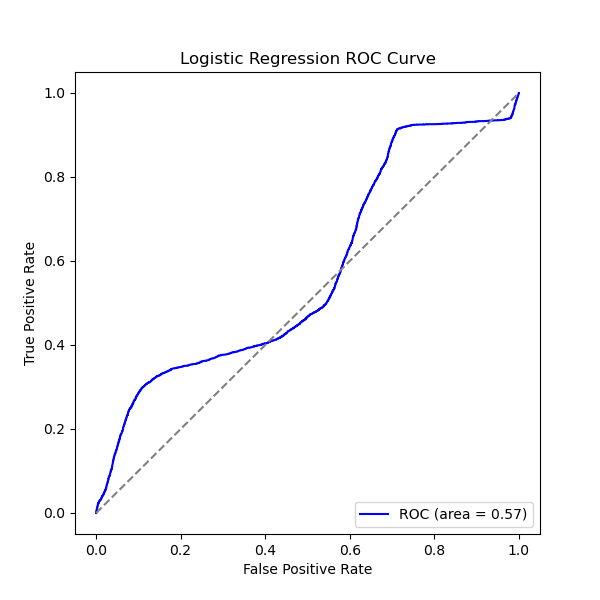

Final Project Report: Bar Crawl Heavy Drinking
Introduction
The goal of this final project is to demonstrate proficiency in working with a very large dataset across multiple tools, primarily Apache Spark on Google Dataproc and Google Cloud Storage (GCS). I selected the Bar Crawl: Detecting Heavy Drinking dataset, which contains:
- Accelerometer readings (over 14 million rows) from 13 participants.
- Transdermal Alcohol Content (TAC) readings collected at 30-minute intervals.
- Phone type metadata (iPhone vs. Android).
- Time-aligned data for each participant, used to study heavy drinking patterns.
Statement of Originality
I worked on this project by myself. During the programming phase, I received coding assistance and suggestions for error handling from GitHub Copilot and ChatGPT for full transparency. However, all final analysis, code, and documentation in this report are my own.
Data & Complexity
This dataset meets several complexity criteria:
- Data not standardized: We merged multiple CSV files (accelerometer data, phone types, TAC readings).
- Split across multiple files: The original dataset included many CSVs, plus separate TAC files.
- Contains strings with punctuation: For example, phone type CSV includes text fields.
- Larger than 1GB: After merging, the dataset is about 1.5 GB.
- Multiple data types: Time series, numeric, string.
- Access method: I uploaded the merged dataset to Google Cloud Storage (GCS) and processed it with Spark on a Dataproc cluster.
By the rubric’s scoring, it easily exceeds the 5–7 points threshold for a suitably challenging dataset.
OSEMN Process
I loosely followed the OSEMN steps: Obtain, Scrub, Explore, Model, iNterpret.
- Obtain: Downloaded raw accelerometer CSV (
all_accelerometer_data_pids_13.csv), phone types, and TAC data from the official repository. - Scrub:
- Merged phone types by
pid. - Cleaned TAC data to remove unusable participants.
- Time-aligned each accelerometer row with the nearest TAC reading using Pandas’
merge_asof.
- Merged phone types by
- Explore:
- Investigated distributions of
(x, y, z)by phone type. - Computed correlation between magnitude and TAC.
- Investigated distributions of
- Model:
- K-means clustering on
(x, y, z, magnitude). - Logistic regression to predict heavy drinking (TAC >= 0.08).
- K-means clustering on
- iNterpret:
- Visualized cluster results (PCA 2D).
- Examined logistic regression performance (AUC ≈ 0.52–0.57).
Loading & Big Data Tools
Google Cloud Storage (GCS)
- I uploaded the merged CSV (time_aligned_barCrawl.csv) to GCS.
- Used
gsutilto verify the file was in the bucket. - Spark read the file directly from
gs://ds512_drinking_data/time_aligned_barCrawl.csv.
Spark (Dataproc)
- Created a Dataproc cluster with enough memory to handle ~1.5 GB of data.
- Used Spark DataFrames to:
- Compute time window stats (group by 1-minute windows).
- Run K-means clustering.
- Run logistic regression (with cross-validation).
- Wrote results (CSVs) and saved plots to GCS.
Three Questions
Q1: Does phone type (iPhone vs. Android) affect average accelerometer readings?
- Grouped by phonetype and computed (avg_x, std_x, avg_y, std_y, avg_z, std_z).
- Result: iPhones had near-zero averages. Android had a large offset in y and z, likely from sensor calibration differences.
Q2: How does acceleration magnitude vary over time, and is it correlated with TAC?
- Computed magnitude = \(\sqrt{x^2 + y^2 + z^2}\).
- Grouped into 1-minute windows => average magnitude.
- Correlation with TAC_Reading is about 0.0489, extremely low.
Q3: Can we predict intoxication (TAC >= 0.08) using (x, y, z, magnitude)?
- Used a scaled-down logistic regression with cross-validation.
- Achieved an AUC of ~0.52–0.57, which indicates a weak predictive signal from just these raw features.
Visualizations & Findings
Phone Type Boxplots
Temporal Patterns
Some participants produce huge outlier readings, causing a large spike.K-means Clustering
Clusters are somewhat distinct, though overshadowed by outliers.Correlation
Very weak correlation (≈0.05) between magnitude & TAC.ROC Curve

AUC ~0.52–0.57, which is barely above random guessing.
Conclusion & Reflection
- Dataset Size: ~1.5 GB after merging, so distributed computing was necessary.
- Observations:
- A large numeric offset for Android data implies a sensor calibration issue.
- Correlation between magnitude & TAC is nearly zero, consistent with the low logistic regression AUC.
- Future Work:
- Incorporate window-based feature engineering (e.g., standard deviation or spectral features).
- Gather additional phone usage context to improve intoxication predictions.
References
- Killian, J.A., Passino, K.M., Nandi, A., Madden, D.R. and Clapp, J. Learning to Detect Heavy Drinking Episodes Using Smartphone Accelerometer Data. In Proceedings of the 4th International Workshop on Knowledge Discovery in Healthcare Data co-located with the 28th International Joint Conference on Artificial Intelligence (IJCAI 2019) (pp. 35-42). http://ceur-ws.org/Vol-2429/paper6.pdf
Appendix
PySpark Script
Below is the PySpark script (barCrawlAnalysis.py) that runs on Google Dataproc. We read from gs://ds512_drinking_data/time_aligned_barCrawl.csv, perform the analyses, and write results + plots to GCS. Comments, error-handling and partial code suggestions were assisted by Copilot & ChatGPT.
#!/usr/bin/env python3
"""
Enhanced PySpark Script for Bar Crawl Heavy Drinking Data Analysis
Saving CSV outputs and plots to GCS.
DATASET ORIGINS:
We obtained "time_aligned_barCrawl.csv" by:
1) Merging "all_accelerometer_data_pids_13.csv" with phone_types.csv by pid.
2) For each participant, reading their "clean_tac/*.csv" file (with columns timestamp, TAC_Reading).
3) Converting both timestamps to comparable datetime formats.
4) Using Pandas' merge_asof (nearest join) to time-align each accelerometer row to the closest TAC reading.
5) Concatenating all participants into one final CSV, renamed "time_aligned_barCrawl.csv".
SCRIPT STEPS:
1. Reads "time_aligned_barCrawl.csv" from GCS into Spark.
2. Analysis 1: Phone type impact on accelerometer readings.
3. Analysis 2: Temporal patterns (compute magnitude, group by 1-minute windows).
4. Analysis 3: K-means clustering on a sample of accelerometer data (with a PCA figure).
5. Analysis 4: Correlation between magnitude and TAC_Reading (with a scatter plot).
6. Analysis 5: Scaled-Down Logistic Regression (using cross-validation with a limited grid and sample)
to predict intoxication (TAC >= 0.08).
7. Writes CSV results to GCS. Plots are saved locally, then uploaded to GCS.
Run:
gsutil -m cp -r "gs://ds512_drinking_data/results" .
to download the /results folder from GCS to your local machine.
"""
import os
import pyspark
from pyspark.sql import SparkSession
from pyspark.sql.functions import (
avg, stddev, sqrt, col, from_unixtime, window, when, corr
)
from pyspark.ml.feature import VectorAssembler
from pyspark.ml.clustering import KMeans
from pyspark.ml.classification import LogisticRegression
from pyspark.ml.evaluation import BinaryClassificationEvaluator
from pyspark.ml.tuning import ParamGridBuilder, CrossValidator
import matplotlib
matplotlib.use('Agg')
import matplotlib.pyplot as plt
import seaborn as sns
# For uploading images to GCS
from google.cloud import storage
def upload_file_to_gcs(local_path, bucket_name, gcs_path):
"""
Uploads a local file to a GCS path using the google-cloud-storage library.
Example gcs_path: 'results/analysis1_phone_type/phone_boxplots.png'
"""
client = storage.Client()
bucket = client.bucket(bucket_name)
blob = bucket.blob(gcs_path)
blob.upload_from_filename(local_path)
print(f"Uploaded {local_path} to gs://{bucket_name}/{gcs_path}")
def main():
spark = SparkSession.builder \
.appName("barCrawlAnalysisToGCS") \
.master("yarn") \
.getOrCreate()
bucket_name = "ds512_drinking_data"
base_gcs_path = "results"
dataset_path = "gs://ds512_drinking_data/time_aligned_barCrawl.csv"
print(f"Reading dataset from {dataset_path}...")
df = spark.read.format("csv") \
.option("header", "true") \
.option("inferSchema", "true") \
.load(dataset_path)
df = df.withColumn("time", col("time").cast("long")) \
.withColumn("x", col("x").cast("float")) \
.withColumn("y", col("y").cast("float")) \
.withColumn("z", col("z").cast("float")) \
.withColumn("TAC_Reading", col("TAC_Reading").cast("float")) \
.withColumn("datetime", col("datetime").cast("timestamp"))
# Analysis 1: Phone Type Impact
phone_stats = df.groupBy("phonetype").agg(
avg("x").alias("avg_x"),
stddev("x").alias("std_x"),
avg("y").alias("avg_y"),
stddev("y").alias("std_y"),
avg("z").alias("avg_z"),
stddev("z").alias("std_z")
)
phone_stats.write.csv(
f"gs://{bucket_name}/{base_gcs_path}/analysis1_phone_type/phone_stats",
header=True,
mode="overwrite"
)
print("Wrote phone_stats to GCS (analysis1_phone_type).")
# Analysis 2: Temporal Patterns
df = df.withColumn("magnitude", sqrt(col("x")**2 + col("y")**2 + col("z")**2))
time_window_stats = df.groupBy(window("datetime", "1 minute")).agg(
avg("magnitude").alias("avg_magnitude")
)
# Flatten struct column
time_window_stats_flat = time_window_stats \
.withColumn("window_start", col("window.start")) \
.withColumn("window_end", col("window.end")) \
.drop("window")
time_window_stats_flat.write.csv(
f"gs://{bucket_name}/{base_gcs_path}/analysis2_temporal/time_window_stats",
header=True,
mode="overwrite"
)
print("Wrote time_window_stats to GCS (analysis2_temporal).")
# Analysis 3: K-Means Clustering
df_sample = df.select("x", "y", "z", "magnitude").limit(20000)
assembler = VectorAssembler(inputCols=["x", "y", "z", "magnitude"], outputCol="features")
df_features = assembler.transform(df_sample).select("features")
kmeans = KMeans(k=3, seed=1)
model = kmeans.fit(df_features)
predictions = model.transform(df_features)
cluster_counts = predictions.groupBy("prediction").count()
cluster_counts.write.csv(
f"gs://{bucket_name}/{base_gcs_path}/analysis3_kmeans/cluster_counts",
header=True,
mode="overwrite"
)
print("Wrote cluster_counts to GCS (analysis3_kmeans).")
from pyspark.ml.feature import PCA as SparkPCA
pca = SparkPCA(k=2, inputCol="features", outputCol="pcaFeatures").fit(df_features)
df_pca = pca.transform(df_features)
pred_df = model.transform(df_pca).select("pcaFeatures", "prediction")
pdf_pred = pred_df.toPandas()
pdf_pred["pc1"] = pdf_pred["pcaFeatures"].apply(lambda v: float(v[0]))
pdf_pred["pc2"] = pdf_pred["pcaFeatures"].apply(lambda v: float(v[1]))
plt.figure(figsize=(8, 6))
sns.scatterplot(data=pdf_pred, x="pc1", y="pc2", hue="prediction", palette="Set1")
plt.title("K-Means Clusters (PCA 2D)")
local_kmeans_fig = "kmeans_pca.png"
plt.savefig(local_kmeans_fig)
upload_file_to_gcs(local_kmeans_fig, bucket_name, f"{base_gcs_path}/analysis3_kmeans/{local_kmeans_fig}")
# Analysis 4: Correlation
corr_val = df.select(corr("magnitude", "TAC_Reading")).collect()[0][0]
print(f"Correlation (magnitude vs. TAC_Reading): {corr_val}")
from pyspark.sql import Row
corr_row = Row(feature1="magnitude", feature2="TAC_Reading", correlation=corr_val)
corr_df_spark = spark.createDataFrame([corr_row])
corr_df_spark.write.csv(
f"gs://{bucket_name}/{base_gcs_path}/analysis4_correlation/magnitude_TAC_corr",
header=True,
mode="overwrite"
)
corr_sample = df.select("magnitude", "TAC_Reading").limit(10000).toPandas()
plt.figure(figsize=(6, 6))
sns.scatterplot(data=corr_sample, x="magnitude", y="TAC_Reading", alpha=0.3)
sns.regplot(data=corr_sample, x="magnitude", y="TAC_Reading", scatter=False, ci=None, color="red")
plt.title("Magnitude vs. TAC_Reading")
corr_fig = "magnitude_TAC_scatter.png"
plt.savefig(corr_fig)
upload_file_to_gcs(corr_fig, bucket_name, f"{base_gcs_path}/analysis4_correlation/{corr_fig}")
# Analysis 5: Logistic Regression
df = df.withColumn("label", when(col("TAC_Reading") >= 0.08, 1).otherwise(0))
assembler_lr = VectorAssembler(inputCols=["x", "y", "z", "magnitude"], outputCol="features_lr")
df_lr = assembler_lr.transform(df).select("features_lr", "label")
df_lr_sample = df_lr.sample(withReplacement=False, fraction=0.01, seed=42)
train_df, test_df = df_lr_sample.randomSplit([0.7, 0.3], seed=42)
lr = LogisticRegression(featuresCol="features_lr", labelCol="label")
paramGrid = (ParamGridBuilder()
.addGrid(lr.regParam, [0.01, 0.1])
.addGrid(lr.elasticNetParam, [0.0, 0.5])
.build())
evaluator = BinaryClassificationEvaluator(labelCol="label", metricName="areaUnderROC")
cv = CrossValidator(estimator=lr, estimatorParamMaps=paramGrid, evaluator=evaluator, numFolds=2)
cvModel = cv.fit(train_df)
bestModel = cvModel.bestModel
predictions_lr = cvModel.transform(test_df)
auc_val = evaluator.evaluate(predictions_lr)
print(f"Logistic Regression AUC (scaled down): {auc_val}")
best_coeffs = bestModel.coefficients.toArray().tolist()
intercept = bestModel.intercept
paramMap = bestModel.extractParamMap()
row_metrics = Row(
AUC=auc_val,
intercept=intercept,
coeffs=str(best_coeffs),
paramMap=str(paramMap)
)
metrics_df = spark.createDataFrame([row_metrics])
metrics_df.write.csv(
f"gs://{bucket_name}/{base_gcs_path}/analysis5_logistic_regression/lr_metrics",
header=True,
mode="overwrite"
)
from sklearn.metrics import roc_curve, auc as sk_auc
pdf_lr = predictions_lr.select("label", "probability").limit(20000).toPandas()
pdf_lr["prob_1"] = pdf_lr["probability"].apply(lambda v: float(v[1]))
fpr, tpr, _ = roc_curve(pdf_lr["label"], pdf_lr["prob_1"])
roc_auc = sk_auc(fpr, tpr)
plt.figure(figsize=(6, 6))
plt.plot(fpr, tpr, color="blue", label=f"ROC (area = {roc_auc:.2f})")
plt.plot([0, 1], [0, 1], color="gray", linestyle="--")
plt.title("Logistic Regression ROC Curve")
plt.xlabel("False Positive Rate")
plt.ylabel("True Positive Rate")
plt.legend(loc="lower right")
local_auc_fig = "lr_roc_curve.png"
plt.savefig(local_auc_fig)
upload_file_to_gcs(local_auc_fig, bucket_name, f"{base_gcs_path}/analysis5_logistic_regression/{local_auc_fig}")
# Additional Plots: Box & Time Series
pdf_plot = df.limit(20000).toPandas()
plt.figure(figsize=(15, 4))
plt.subplot(1, 3, 1)
sns.boxplot(x="phonetype", y="x", data=pdf_plot)
plt.title("Distribution of x by Phone Type")
plt.subplot(1, 3, 2)
sns.boxplot(x="phonetype", y="y", data=pdf_plot)
plt.title("Distribution of y by Phone Type")
plt.subplot(1, 3, 3)
sns.boxplot(x="phonetype", y="z", data=pdf_plot)
plt.title("Distribution of z by Phone Type")
plt.tight_layout()
local_boxplot = "phone_boxplots.png"
plt.savefig(local_boxplot)
upload_file_to_gcs(local_boxplot, bucket_name, f"{base_gcs_path}/analysis1_phone_type/{local_boxplot}")
time_pdf = time_window_stats.limit(5000).toPandas()
time_pdf["window_start"] = time_pdf["window"].apply(lambda w: w["start"])
plt.figure(figsize=(10, 6))
sns.lineplot(x="window_start", y="avg_magnitude", data=time_pdf)
plt.title("Average Acceleration Magnitude Over Time")
plt.xlabel("Time")
plt.ylabel("Avg. Magnitude")
plt.xticks(rotation=45)
plt.tight_layout()
local_timeseries = "avg_magnitude_timeseries.png"
plt.savefig(local_timeseries)
upload_file_to_gcs(local_timeseries, bucket_name, f"{base_gcs_path}/analysis2_temporal/{local_timeseries}")
spark.stop()